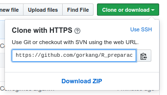
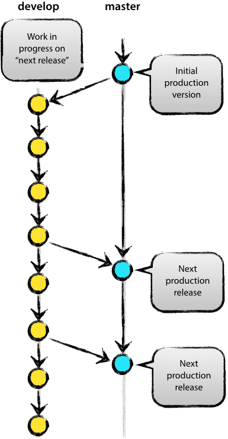
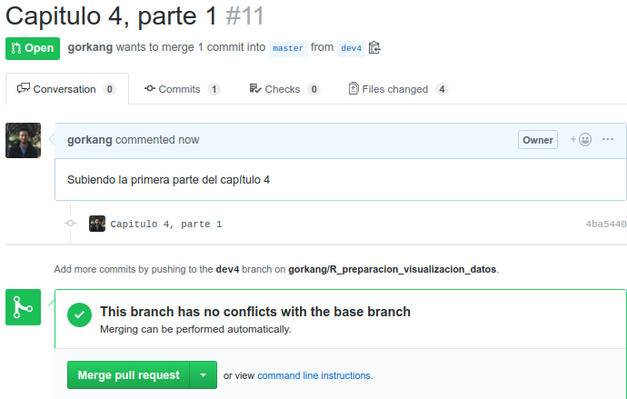

if (!require('afex')) install.packages('afex'); library('afex')
if (!require('correlation')) install.packages("correlation"); library('correlation')
if (!require('corrr')) install.packages('corrr'); library('corrr')
if (!require('dplyr')) install.packages('dplyr'); library('dplyr')
if (!require('DT')) install.packages('DT'); library('DT')
if (!require('ggraph')) install.packages('ggraph'); library('ggraph')
if (!require('here')) install.packages('here'); library('here')
if (!require('gtsummary')) install.packages('gtsummary'); library('gtsummary')
if (!require('knitr')) install.packages('knitr'); library('knitr')
if (!require('papaja')) install.packages("papaja"); library('papaja')
if (!require('parameters')) install.packages('parameters'); library('parameters')
if (!require('remotes')) install.packages('remotes'); library('remotes')
if (!require('renv')) install.packages("renv"); library('renv')
if (!require('report')) install.packages("report"); library('report')
if (!require('rticles')) install.packages('rticles'); library('rticles')
if (!require('see')) install.packages("see"); library('see')
if (!require('sjPlot')) install.packages('sjPlot'); library('sjPlot')
if (!require('stringi')) install.packages('stringi'); library('stringi')
if (!require('tinytex')) install.packages('tinytex'); library('tinytex')
if (!require('usethis')) install.packages('usethis'); library('usethis')
8 Control de cambios con Git y Github
Paquetes para este capítulo
Dependencias
Vamos a necesitar Git y Latex para poder trabajar:
Instalar Git
Ver instrucciones para Windows, Mac y Linux.
Importante: en el paso Adjusting your PATH environment en en Windows, selecciona Git from the command line and also from 3rd-party software
8.1 Git

Un segundo elemento que nos va a ayudar a trabajar en equipo, y a evitar problemas en proyectos relativamente complejos es el uso de un sistema de control de versiones como Git. Los proyectos de RStudio hacen especialmente sencillo usar algunas funcionalidades básicas de Git.
Algunas referencias útiles:
8.2 Github

{kind=link}
Github es una plataforma web muy popular donde almacenar proyectos de programación que usa como motor. Muchos de los paquetes de R, el mismo RStudio, etc, tienen repositorios abiertos en Github. Una de las ventajas fundamentales de usar Github es que esta plataforma integra algunas herramientas para hacer más sencillo el control de versiones, como el pull request, que nos permite combinar ramas de proyectos sin apenas problemas.
Github tiene un programa especial para estudiantes: https://education.github.com/
8.3 Clonar un repositorio existente
Algo que podemos hacer con todos los repositorios de Github es clonarlos localmente:
Primero, copiamos la repository URL del repo de Github (ver imagen de abajo). Será algo similar a https://github.com/VUESTRO_NOMBRE_DE_USUARIO/NOMBRE_REPOSITORIO.git

Segundo, en RStudio: File > New Project > Version Control > Git

8.4 Crear un proyecto en RStudio asociado a Github
Podemos empezar creando un repositorio en Github, para después clonarlo localmente. Si necesitamos crear un personal access token, podemos consultar la ayuda de Github.
# Puedes usar:
usethis::create_github_token()
# O manualmente, como los animales:
# En tu página de Github, haz click en tu icon (arriba a la derecha) -> Settings -> Developer settings -> Personal access tokens -> [Generate new token] -> Give gist, repo and workflow permissions.Versión simple [recomendado]
En Github:
Creamos repositorio nuevo
Initialize this repository with a README
Alternativamente, si ya tenemos un proyecto de RStudio, podemos crear un repositorio de Github asociado automágicamente.
Usando el terminal
Crear local git repo (solo si no lo tenemos aún):
usethis::use_git()(se crea una carpeta oculta llamada .git)Crear Github Token:
usethis::create_github_token()Insertar token en archivo .Renviron:
usethis::edit_r_environ()Crear Github repo:
usethis::use_github()
- Empujar el repositorio local a Github:
git push --set-upstream origin master
Ejercicio Git-Github
Crea un proyecto de RStudio
Abre una cuenta en Github y/o haz login
Sigue los pasos de arriba para crear un repositorio público y asociarlo a un repositorio local
8.5 Workflow

Hay diferentes filosofias sobre cual es la mejor manera de trabajar con Git.
En este post por Vincent Driessen podeis ver una explicación bien detallada, complementada con imagenes como la que se ve a continuación.
El modelo básico implica la existencia de dos ramas. Una master (“producción”), que siempre debe funcionar, y una develop (para desarrollo), donde experimentamos, rompemos cosas, etc.
Podeis ver un manual super completo llamado Happy Git and GitHub for the useR elaborado por Jenny Bryan, Jim Hester, entre otros.
8.5.1 Modelo básico
En RStudio podemos trabajar gráficamente, Usando el panel Git.

Usando el entorno gráfico
Empezamos en la rama master:
-
Pull
 : nos aseguramos que nuestro repositorio local esta actualizado
: nos aseguramos que nuestro repositorio local esta actualizado
-
Branch
 : Creamos nueva rama llamada development
: Creamos nueva rama llamada development
- Hacemos cambios en nuestros scripts
-
Commit
 : Commiteamos los cambios
: Commiteamos los cambios
-
Push : subimos la rama a Github
- Pull request (En Github):
- Compare & Pull request
-
Pull : nos aseguramos que nuestro repositorio local esta actualizado
Como hacerlo usando el terminal 
-
Pull: nos aseguramos que nuestro repositorio local esta actualizado:
git pull -
Branch: Creamos nueva rama llamada development:
git checkout -b development
- Hacemos cambios en nuestros scripts
-
Commit: Commiteamos los cambios
- Añadimos archivos:
git add foo.txt
- Hacemos el commit:
git commit --message "A commit message"
-
Push: subimos la rama a Github:
git push origin development
- Pull request (En Github):
- Compare & Pull request
-
Pull: nos aseguramos que nuestro repositorio local esta actualizado:
git pull
8.5.2 Pull request en 3 + 1 sencillos pasos
Después de hacer el push de arriba, al entrar en nuestro repositorio deberíamos ver algo parecido a lo siguiente (si no lo vemos, ir a branches). La única dificultad es saber cual de los botones verdes apretar:
8.5.2.1 Paso 1. Compare & pull request

8.5.2.2 Paso 2. Create pull request

8.5.2.3 Paso 3. Merge pull request

- Borrar rama antigua
Ejercicio
Nuestro primer commit
Usando el proyecto de RStudio de antes, crea una rama nueva llamada development
Crea un nuevo archivo en formato .Rmd:

Haz un commit de ese archivo y subelo (push) a Github (asegurate que esta allá!). No olvides hacer un pull!
Ahora haz cambios en el archivo, commitealos, súbelos, y sincroniza tu repo local
Bibliografía
Happy Git and GitHub for the useR
Scheel, A. M., Schijen, M., & Lakens, D. (in press). An excess of positive results: Comparing the standard Psychology literature with Registered Reports. Advances in Methods and Practices in Psychological Science.
Xie, Y., Allaire, J. J., & Grolemund, G. (2018). R Markdown: The Definitive Guide. CRC Press. https://bookdown.org/yihui/rmarkdown/
Yihui Xie (2018). bookdown: Authoring Books and Technical Documents with R Markdown https://bookdown.org/yihui/bookdown/markdown-syntax.html
- Mas cosas sobre reproducibilidad: